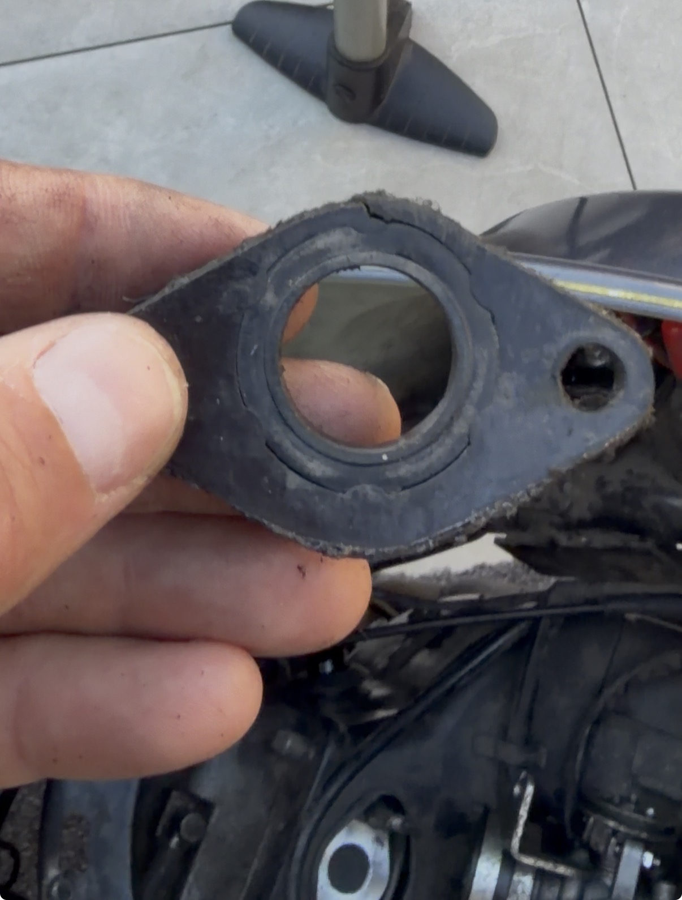

What Is Intake Flooding on an EFI Scooter?
Most hard-start guides tell you the engine is starved of fuel. This guide covers the opposite problem: too much fuel in the intake. When excess petrol pools in the intake port or cylinder, the spark plug drowns and cannot ignite the mixture. The engine cranks normally but refuses to fire — or fires once with a cough of black smoke and immediately dies.
On EFI GY6 engines, intake flooding has two common causes: a cracked rubber intake insulator (the mounting block between the throttle body and the cylinder head) or a leaking fuel injector that drips raw fuel into the intake port when the engine is switched off. Both allow liquid fuel to pool in the port rather than being delivered as a precisely metered mist on demand.
Video: EFI Intake Flooding — Real Example
Video shows a real EFI scooter with fuel pooled in the intake — cracked insulator and injector leak identified and repaired.
Symptoms
| Symptom | Flooding Likelihood |
|---|---|
| Engine cranks freely but will not fire at all | High |
| Starts briefly, fires once or twice, then immediately dies | Very high |
| Black smoke from the exhaust on the rare occasions it fires | Very high |
| Strong petrol smell from the airbox or around the engine | High |
| Spark plug electrode is wet and smells of petrol when removed | Definitive confirmation |
| Engine starts after leaving it overnight (fuel evaporates) | High |
| Fuel visible or wet residue inside the intake port | Definitive confirmation |
| No fault codes on the ECU (flooding is a mechanical problem, not a sensor fault) | Supports flooding diagnosis |
The Two Main Causes
Cause 1 — Cracked Intake Insulator (Manifold Gasket Block)
The intake insulator is the rubber block connecting the throttle body to the cylinder head inlet port. It absorbs vibration and provides a heat barrier. After several years, the rubber cracks — often across the top, along the inner bore, or at the mounting flange. On an EFI engine, a cracked insulator allows unmetered air in (confusing the ECU's fuelling calculations) and, critically, lets condensed or dripped fuel bypass the intake air path and pool directly in the port.


Cause 2 — Leaking Fuel Injector
The fuel injector on a GY6 EFI engine is held in the intake manifold by two rubber O-rings (top and bottom). When these O-rings harden and crack with age, fuel weeps past the seal and drips into the intake port while the engine is at rest — the fuel rail remains pressurised for some time after the engine is switched off. Even a slow drip accumulates quickly enough to flood the cylinder overnight. A leaking injector body itself (cracked solenoid housing, degraded pintle seal) is less common but produces the same symptom.
Tools & Parts Needed
| Item | Why needed | Approx. cost |
|---|---|---|
| Flat-blade screwdriver (3 mm & 5 mm) | Clamp screws, air duct clips | — |
| Phillips #2 screwdriver | Side panel screws, air filter cover | — |
| 10 mm spanner | Intake insulator mounting nuts | — |
| Torx T20 or T25 (varies by model) | Throttle body mounting screws on some models | — |
| Clean rags | Absorbing spilled fuel | — |
| GY6 EFI intake insulator (rubber manifold block) | Replace if cracked | €3–8 |
| Fuel injector O-ring kit | Replace both O-rings if injector is weeping | €2–5 |
| Replacement injector (same part number) | Only if injector body itself is cracked or pintle seal failed | €15–40 |
| Spark plug (NGK CR6HIX or equivalent) | Replace if plug was severely fouled with fuel | €4–8 |
Step-by-Step Procedure
Step 1 — Confirm Flooding and Clear the Cylinder
- Turn the ignition off. On EFI engines the fuel pump stays primed — if possible, locate the fuel pump fuse and remove it to depressurise the rail before opening anything.
- Remove the spark plug using a 16 mm plug socket. Inspect it: if it is wet and smells strongly of petrol, flooding is confirmed.
- With the plug still out, hold the throttle fully open and crank the engine for 5–8 seconds (electric starter). This expels excess fuel from the cylinder as vapour.
- Leave the plug out for 5–10 minutes to allow the cylinder to air out further.
- Reinstall the spark plug (or a new one if the old plug is fuel-fouled). Tighten finger-tight plus one-quarter turn.
Step 2 — Inspect the Intake Insulator
- Remove the side panel or access cover to expose the throttle body.
- Loosen both clamps securing the throttle body — the air duct side and the head-side insulator clamp.
- Twist and pull the throttle body slightly away from the insulator to expose it. You do not need to disconnect all wiring harness connectors at this stage — just rotate it enough to see the insulator.
- Squeeze and flex the insulator in all directions. Cracks often hide on the inner bore surface, along the top edge, or at the head-facing flange. Look for crazing, splits, or any visible gap.
- CRACKED: Replace immediately — see Step 4.
- INTACT: Refit the throttle body clamp. Proceed to Step 3 to check the injector.
Step 3 — Inspect the Fuel Injector O-Rings
- With the fuel pump fuse removed, fully disconnect the throttle body (harness connectors, throttle cable, coolant hoses if fitted). Set it on a clean rag.
- Locate the fuel injector — it sits in a bore in the intake manifold or throttle body, held by a retaining clip or bracket. Release the clip and pull the injector straight out.
- Inspect both O-rings on the injector body. They should be soft, uniformly round, and black. If they are flat, cracked, or shiny-hardened, they are no longer sealing.
- Also inspect the injector body for fuel staining or wetness at the O-ring grooves — this confirms the leak path.
- O-RINGS DEGRADED: Replace with a new O-ring kit — see Step 5.
- INJECTOR BODY DAMAGED: Replace the entire injector — match the part number stamped on the injector body.
- O-RINGS INTACT: Reinstall and check float height (not applicable — EFI). Re-examine for other causes such as a leaking fuel pressure regulator or a failed fuel pump check valve holding rail pressure after shutdown.
Step 4 — Replace the Intake Insulator
- Fully disconnect the throttle body (wiring harness, throttle cable, breather hoses) and set it aside.
- Remove the two M6 nuts or bolts holding the insulator to the cylinder head studs. Use a 10 mm spanner or socket.
- Pull the insulator free. Clean the cylinder head mating face — remove any old gasket material or debris.
- Fit the new insulator. Ensure the paper or rubber gasket on the head-facing side is in place. Tighten the mounting nuts evenly to approximately 10 Nm — do not overtighten in the aluminium head.
- Refit the throttle body into the insulator bore. Tighten both clamps firmly but not so tight that the clamp cuts into the rubber.
- Reconnect all harness connectors, throttle cable, and hoses.
Step 5 — Replace the Injector O-Rings
- Source an O-ring kit for your injector. Most GY6 EFI injectors use standard 14 mm × 1.5 mm and 11 mm × 1.5 mm Viton O-rings — confirm by measuring the old ones or searching your injector part number.
- Lubricate the new O-rings lightly with clean engine oil before fitting — this prevents tearing on installation and ensures a proper seat.
- Slide both O-rings onto the injector body into their respective grooves.
- Push the injector squarely back into its bore in the manifold. It should seat without force — if it resists, check the O-ring is not folded or misaligned.
- Refit the retaining clip or bracket so the injector cannot be pushed out by fuel pressure.
- Reconnect the fuel rail and injector electrical connector.
Step 6 — Verify the Repair
- Reinstall the fuel pump fuse. Turn the ignition to ON (do not start) — you should hear the pump prime for 2–3 seconds. Wait 60 seconds and check around the injector and manifold for any fuel drips.
- If no drips: start the engine and allow it to reach operating temperature (approximately 4–5 minutes).
- Switch the engine off and wait 10 minutes. Remove the spark plug and confirm it is dry. Reinstall and start normally.
- A cold start should now require just the normal key-on pump prime and one or two cranks.
Troubleshooting Table
| Problem after repair | Likely cause | Action |
|---|---|---|
| Still floods immediately after stopping | Injector O-ring not seated correctly, or injector body itself is cracked | Re-inspect O-rings. If body has visible cracks or fuel staining through the housing, replace the whole injector. |
| Floods after sitting overnight but not immediately | Fuel pump check valve failed — rail depressurises slowly, injector weeps under lower pressure | Replace the fuel pump assembly (check valve is internal). Confirm by installing a fuel rail pressure gauge and watching if pressure bleeds off after shutdown. |
| Erratic idle after insulator replacement | Throttle body-to-insulator clamp loose, or air duct not reseated | Tighten both clamps. Re-run the spray test from the Air Leak Diagnosis guide. Check for new ECU fault codes (unmetered air will upset fuelling trim). |
| CEL / fault code after repair | ECU learned incorrect fuel trim during the flooding period | Clear fault codes with a diagnostic tool or by disconnecting the battery for 30 seconds. Allow the ECU to re-learn idle trim over a short test ride. |
Related Guides
- GY6 Carburetor Hard Start: Intake Flooding (cracked insulator & needle valve — carbureted engines)
- GY6 EFI Fuel Injection Troubleshooting (fault codes, fuel pump, sensors)
- Diagnosing Air Leaks & Vacuum Sucking (lean air leak — opposite problem)
- GY6 Won't Start — Full Troubleshooting Checklist
- Reading Your Spark Plug — Fuel, Oil, and Heat Diagnosis
Photos: original ISMR content (CC BY-SA 4.0). Video: YouTube. Sources: GY6 EFI service documentation; community-contributed real-world repair cases. Last updated: 2026-05-10. Licensed CC BY-SA 4.0.